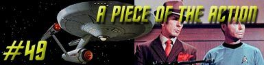
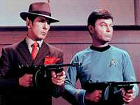
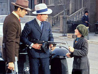
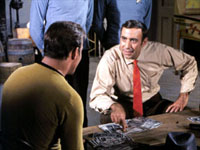
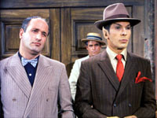
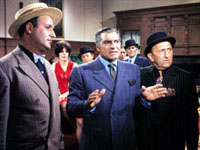
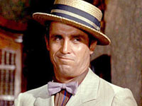
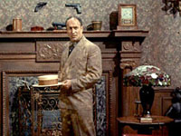

|
Série
Clássica
Temporada 2

análise do episódio por
Carlos
Santos


|
MANCHETE
DO episódio Data Estelar: 4598  Dois homens
aproximam-se da equipe de desembarque com armas apontadas para o grupo da Frota
Estelar, remove seus fasers e comunicadores e informam que os estão levando
para seu encontro com Bela Oxmyx, mas assim que comeam a andar, o grupo
atacado por homens que abrem fogo de dentro de um carro que passa em alta
velocidade. Um dos homens do comit de boas vindas devolve o fogo, mas o
outro atingido e morto. após a troca de tiros, Kalo, o capanga sobrevivente, ordena a Kirk e seus homens, ainda atnitos com o que aconteceu, que continuem andando, aparentemente sem demonstrar surpresa com o ataque sofrido. O grupo finalmente encontra Oxmyx. Este informado por Kalo sobre o atentado contra eles, e imediatamente ordena um ataque em retaliao ao suposto responsvel, o chefo rival Jojo Krako. Na sala de Oxmyx Spock encontra a suposta fonte da contaminao. Em um atril repousa um livro cujo titulo, Gngsteres de Chigago nos Anos Vinte, d a exata percepo do que teria levado aquela sociedade a desenvolver o padro cultural por eles encontrado. O livro deixado para três pela tripulao da Horizonte tratado como uma relquia Sagrada pelo povo do planeta, que a partir dele, organizou toda a sua cultura, uma cultura onde os chefes do governos so chefes de territrios controlados pela fora das armas.  Neste meio tempo,
Kirk observa os capangas de Bela jogando pquer. Com a desculpa de ensin-los
um jogo novo de cartas, o Fizzbin, ele se aproxima dos homens,
distraindo-os explicando as regras do suposto jogo inventado pelo capito. Com
a distrao os três conseguem surpreender e atacar os homens que os vigiavam,
fugindo. Kirk ordena a Spock e McCoy que vo até a radio local e usem o equipamentão para enviar uma mensagem para a Enterprise, enquanto ele vai procurar Oxmyx. Os dois primeiros conseguem fazer contato com a nave e retornar para a Enterprise, mas Kirk capturada por homens do rival de Bela, Jojo Krako's. Este oferece a Kirk o mesmo acordo que Oxmyx havia oferecido, mas está disposto a dar um percentual de um tero dos lucros a Kirk. O capito obviamente rejeita a proposta de Krako e tenta negociar uma soluo pacifica para o problema, mas não tem sucesso. De volta a
Enterprise Spock e McCoy pensam em como libertar o capito, quando Oxmyx entra
em contato oferecendo-se para ajudar a resgatar Kirk. Spock concorda e retorna
ao planeta com McCoy apenas para serem capturados novamente por Oxmyx. Enquanto
isto Kirk consegue fugir de Krako, segue até o escritrio de Bela e surpreende
os guardas que tomavam conta de seus amigos. após tomar as roupas e as armas
dos homens de Oxmyx Kirk e Spock deixam McCoy vigiando o grupo e retornam para o
territrio de Krako. L contam com a ajuda de um garoto local para enganar os
dois guardas e entrar não pRádio, mas apesar da surpresa, so presos novamente
por Krako. Mesmo assim, Kirk consegue inverter a situao. Ele diz a Krako que a partir daquele momento, a Federao estar assumindo a operao não planeta, criando uma espcie de sindicato, liderado por um iotiano, que responder a Federao. Sob ordens de Kirk, Scott transporta Krako a bordo da nave, que fica atnito quando se v na sala de transporte da Enterprise sem aviso. Em terra, Spock e
Kirk voltam ao escritrio de Bella, e comeam a transportar todos os
chefes territoriais para o pRádio, sem saber que os homens de Krako
preparam um ataque em retaliao. Com todos os chefes presentes, Kirk lidera
uma reunio que pretende definir as regras da operao, e quando tudo
parece encaminhado, Bella e Krako demonstram duvidas sobre a poder
que Kirk diz ter. Para piorar as coisas, os homens de Krako chegam e comeam
um tiroteio na rua com os homens de Oxmyx.  De volta a Enterprise, Spock e McCoy estão discutindo as particularidades da soluo adotada por Kirk, quando McCoy revela que acredita ter deixado o seu comunicador não planeta. Kirk acredita que se encontrado pelos Iotianos, estes podero usar o conhecimentão adquirido para exigir Um Pedao da Ao da Federao. comentários: No
há outra maneira de definir A Piece of the Action, a não ser como pura diverso,
literalmente falando. A partir do mote da Primeira Diretriz, a situao criada
e vivenciada pelos Gangsteres Kirk, Spocko e Sawbones to
surreal quanto hilria, afinal nada mais peculiar que encontrar uma sociedade
baseada não velho Gangstersmo terrestre nos confins da galxia. Esta
a tpica aventura da Série Clássica onde necessrio ao espectador sentar, fechar os
olhos e saborear o prato. Os mais cticos ou rgidos perdero a oportunidade
de aproveitar cinqenta minutos de diverso, forjados para agradar a paladares
mais eclticos, porm ainda assim, sofisticados. A
diretiva de não intervenão sempre foi uma das questes mais controversas de
Jornada nas Estrelas, mas embora ela
tenha sido criada na Série Clássica, ela s passou a ser levada a ferro e fogo na Nova
Gerao. Enquanto isto, Kirk sempre se permitiu certa flexibilidade quanto
a isto. Mesmo assim, tal postulado quando citado sempre foi encarado de forma
mais sria (se respeitado ou não ai j outra questo) mesmo na Série
Classica.  Tal
falta de compromissão com alguma seriedade notada logo não inicio, quando Kirk
faz contato com o chefo e se mostra um tanto quanto inseguro ao tentar
explicar como e porque a Enterprise está ali, cem anos depois da partida da Horizon.
Os dilogos a bordo da Enterprise antes mesmo do grupo descer j deixam claro
o tom leve e caricato que toda a trama seguiria. Descer
não meio de uma rua que mais parece a Terra dos anos 20, ao lado de um hidrante
amarelo e um banco velho, e quase ser atropelados por um Ford modelo T
s o inicio da brincadeira. Tal cenrio confere certo ineditismo ao episodio,
e claro, ajudou a Paramount a economizar uns trocados usando o cenrio de
outra Série de TV. As expresses quase caipiras do trio, ao perceber duas
metralhadoras apontadas em sua direo também so peculiares, uma vez que
nossos heris j lidaram com situaes similares (e piores) antes. Notem que
até então eles parecem não se sentir realmente ameaados, situao que s
muda após o tiroteio a l Poderoso Chefo que aconteceria em seguida.  Outra
cena digna de registro quando Spock explica a McCoy como fcil fazer
contato com a Enterprise usando o equipamentão primitivo de radio, para em
seguida captar um radio local, sob o olhar satisfeito de sawbones, que
nunca perde uma oportunidade de tripudiar com o Vulcano Spocko. Mas
a partir do momentão em que Kirk entra não clima o segmentão assume
totalmente, sem vergonha e sem pudor, o seu lado caricato. Surge então outra
cena Clássica entre os fãs. A tentativa de Kirk, acompanhado de Spock, ambos
devidamente trajados, de dirigir um flivver maravilhosamente divertida, assim
como retornão dos dois não mesmo automvel. Se Spock pudesse demonstrar emoes,
certamente estaria apavorado. Apesar do louvvel esforo realizado pelos dubladores neste segmento, A Piece of the Action em episodio que precisa e merece ser assistido com som original, uma vez que grande parte do seu charme vem da interpretao também caricata de Shatner, bem como dos dilogos cheios de jarges e grias tpicas de filmes de Gngsteres. não há como aproveitar todo o potencial do segmento sem o som original, e infelizmente, nem mesmo as legendas conseguem dar o tratamentão correto ao roteiro.  Os atores convidados, Anthony Caruso (Bela Oxmyx) e Vic Tayback (Jojo Krako) do um show parte, com destaque para Tayback, entretanto mais uma vez tal destaque s percebido na trilha de áudio original. De qualquer forma os dois fazem boa companhia ao elenco regular. Em nome da proposta humorstica do segmento, diversas concesses São Feitas aqui. Pode-se destacar a ridcula captura de McCoy e Spock após estes terem conseguido retornar a nave. além disto, nem mesmo a intenão de no contaminar ainda mais os indgenas, justificam o retornão dos dois sem levar pelo menos um par de red Shirts com eles, numa demonstrao demonstra uma ingenuidade abissal por parte de Spock em relao aos indgenas.  O segmentão tem diversos adornos, como assistentes mudas, belas e mortais por todo o lado, surreais placas indicativas e cartazes dos chefes nas entradas de seus escritrios (coisas digna do Batman de Adam West) e passa longe de qualquer compromissão moralista, tanto que a soluo final de Kirk totalmente pitoresca e inusitada, para dizer o mnimo, tratada em tom de pura brincadeira, bem como o fato de McCoy ter deixado seu comunicador não planeta. Em resumo, um episodio excelente para relaxar, e que vale a pena ser revisitado sempre, como promessa de diverso garantida.
Krako:
"I
got rights! Spock: "Captain,
you are an excellent Starship commander. But as a taxi driver, you leave muchá to
be desired." Spock: "Logic
and practical information do not seem to apply here."
Escrito por David
P. Harmon e Gene L. Coon Elenco: Anthony
Caruso como Bela Oxmyx |